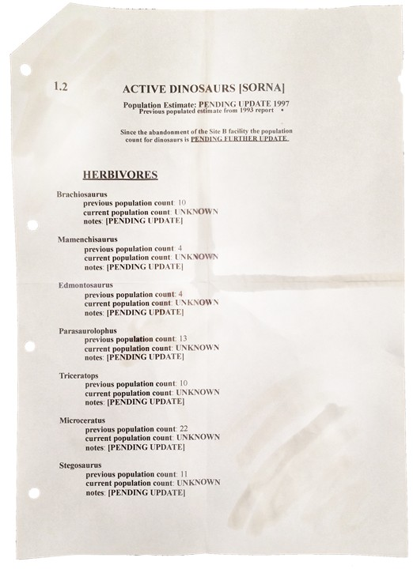
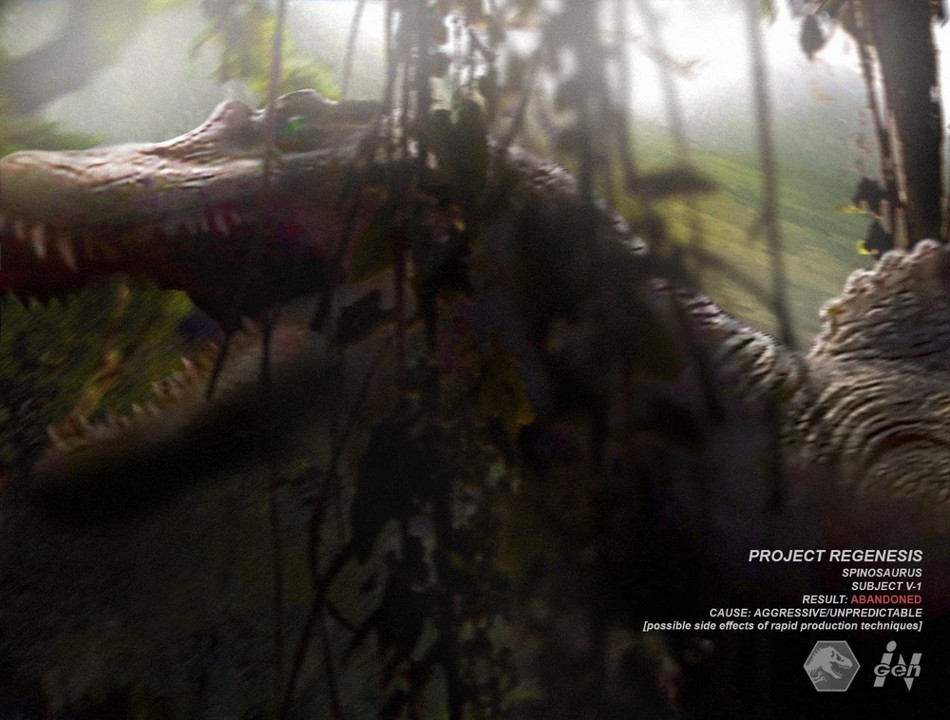

REGISTRO DE INCIDENTES
Haz clic en cada expediente para ver la información detallada
El Incidente de 1993 (Isla Nublar)
CRÍTICO
Resumen del Expediente
El 11 de junio de 1993, el parque temático Jurassic Park en Isla Nublar sufrió un fallo catastrófico de seguridad provocado por el sabotaje del programador Dennis Nedry. Nedry deshabilitó las redes de seguridad para robar embriones a cambio de dinero, lo que permitió que los dinosaurios, incluyendo al Tyrannosaurus rex y a los Velocirraptores, escaparan de sus recintos.
Esto resultó en múltiples muertes y la pérdida total de la isla. InGen silenció a los sobrevivientes con compensaciones económicas y amenazas legales, y el gobierno de Costa Rica tuvo que intervenir para evitar que Estados Unidos bombardeara la isla.
InGen falsificó los informes de incidente. Los registros originales fueron destruidos en la sede de San José, Costa Rica. Esta información proviene de fuentes internas con riesgo vital para las mismas.
Operación Limpieza (1994)
ENCUBIERTA
Informe de Campo
Para mitigar las enormes pérdidas financieras y asegurar sus activos tras el desastre del 93, la junta directiva de InGen aprobó la primera Operación Limpieza. Sus objetivos fueron recuperar muestras de ADN de la mayoría de las especies de Isla Nublar, realizar un conteo de los sobrevivientes y trasladar a un número considerable de estos dinosaurios hacia la Isla Sorna (el sitio de cría B).
Sin embargo, durante el traslado, varios contenedores fueron desviados en secreto hacia paraderos desconocidos.
Se recuperaron fragmentos de los registros operativos. Se incluyen en el siguiente archivo de evidencia clasificada:
Operación Limpieza (1996)
ENCUBIERTA
Informe de Campo
Bajo la dirección del ejecutivo Scrap Davis, InGen lanzó una segunda Operación Limpieza en la Isla Sorna. El objetivo era recuperar documentos técnicos y reactivar la energía para extraer dinosaurios para el nuevo proyecto "Jurassic Park San Diego".
El equipo enviado sufrió un ataque por parte de los dinosaurios sueltos, pero logró reactivar los sistemas para que InGen obtuviera la información semanas después.
Archivos de la Operación Limpieza en Sorna recuperados de servidores de respaldo:
Proyecto Re-Génesis
EXPUESTO
Análisis del Programa
Iniciado en 1994, el Proyecto Re-Génesis buscaba ir más allá de la clonación, utilizando manipulación genética avanzada para crear híbridos con posibles aplicaciones militares. Tras la compra de InGen por Masrani Global en 1998, el Dr. Michael King reactivó el proyecto clandestinamente.
En 1999, el gobierno de EE.UU. descubrió que el proyecto violaba la Ley de Guardia Genética y ordenó su clausura inmediata y la destrucción de los especímenes alterados.
A pesar del cierre oficial, la operación continuó en las sombras. Los registros legales públicos son solo la punta del iceberg.
Incidente de 2001 (Isla Sorna)
CRÍTICO
Resumen del Expediente
Un grupo realizó una incursión ilegal en Isla Sorna para rescatar a un joven extraviado, secuestrando bajo engaños al Dr. Alan Grant como guía. Las alteraciones en el ecosistema causaron la liberación accidental de Pteranodones, que escaparon hasta Oklahoma.
InGen envió a Vic Hoskins para contenerlos. Masrani Global firmó un nuevo contrato con Costa Rica para gestionar las islas Nublar, Sorna y Matanceros.
Los supervivientes describieron un ecosistema activo con crías de al menos cuatro especies — imposible si las operaciones de InGen hubieran cesado realmente en 2000.
Lo que pasó en la Isla Matanceros (2002)
CLASIFICADAACCESO DENEGADO
Proyecto Nueva Era
En Matanceros, el "Proyecto Nueva Era" bajo el Dr. Michael King y financiado por el ejército estadounidense creó dinosaurios híbridos militarizados: Utahraptors adiestrados y el Ultimate Predator X.
La situación culminó en catástrofe total cuando los dinosaurios híbridos escaparon, masacrando al personal. Los sobrevivientes lograron huir en helicóptero.